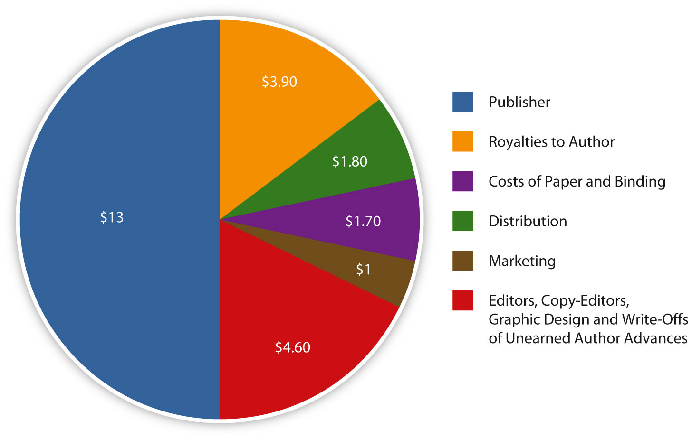

The last few decades have seen a sharp rise in electronic entertainment. In 2009, the average American spent 56 percent of his or her free time watching television, and less than 7 percent of his or her free time reading.U.S. Department of Labor, Bureau of Labor Statistics, American Time Use Survey, Table 11, “Time spent in leisure and sports activities for the civilian population by selected characteristics, 2009 annual averages,” June 22, 2010, http://www.bls.gov/news.release/atus.t11.htm. Video game sales rose 19 percent in 2008 alone and has continued to climb.Associated Press, “Video Game Sales Top $21 Billion in 2008,” Games on msnbc.com, January 15, 2009, http://www.msnbc.msn.com/id/28682836/ns/technology_and_science-games/t/video-game-sales-top-billion/. In a world full of diverting entertainments, each clamoring for people’s time, the publishing industry is endeavoring to do everything it can to capture readers’ attention.
Imagine this scenario: A young author has spent the last few years slaving over his novel, rewriting and revising until the whole thing is polished, exciting, and fresh. He sends out his manuscript and is lucky enough to find a literary agent eager to support his work. The agent sells the book to a publisher, netting the author a decent advance; the book goes on to get great reviews, win some awards, and sell 20,000 copies. To most people, this situation sounds like a dream come true. But in an increasingly commercialized publishing industry, with a focus on finding the next blockbuster, this burgeoning author could be at risk of not getting his contract renewed.
In an industry increasingly dominated by large media corporations with obligations to stockholders, publishers feel pressured to turn a profit. As a result, they tend to bank on sure-fire best sellers, books that are expected to sell millions (or tens of millions) of copies, regardless of literary merit. The industry’s growing focus on a few best-selling authors, called blockbuster syndromeThe publishing industry’s focus on books with bestseller potential., often means less support and less money for the vast majority of writers who don’t sell millions of copies.
An advanceA sum of money paid to the author in expectation of future royalties. is a sum of money paid to the author in expectation of future royalties. RoyaltiesA percentage of a book’s sales granted to its author. are a percentage of the book’s sale price. So if a publisher gives an author a $10,000 advance, the author has immediate access to that money, but the first $10,000 worth of royalties goes to the publisher. After that, the author accumulates royalties for every book sold. In this way, an advance is a cross between a loan and a gamble. If the book doesn’t sell well, the author doesn’t have to pay back the advance; however, he or she won’t earn any additional money from royalties. However, as many as three-quarters of books don’t earn back their advances, meaning that their authors aren’t making any money from sales at all.
Publishers and writers are notoriously hush-hush about the actual sums of advances. A recent New York Times article estimated an average advance to be around $30,000, though actual figures vary widely. Keeping in mind that a book may take years to write, it’s clear that many authors are barely eking out a living from their books.
Figure 3.10 All Advances Aren’t Equal

Bret Easton Ellis, American Psycho: $300,000Giselle Benatar, “American Psychodrama,” Entertainment Weekly, November 30, 1990, http://www.ew.com/ew/article/0,,318714,00.html.
Donna Tartt, A Secret History: $450,000Brooke Allen, “Panpipes and Preppies,” review of The Secret History, by Donna Tartt, New Criterion, October 1992, Books, http://www.newcriterion.com/articles.cfm/Panpipes—preppies-4619.
Sarah Palin, Going Rogue: $1.25 millionYereth Rosen, “Palin’s Financial Disclosure: $1.25 mln advance for ‘Going Rouge’,” Reuters, October 27, 2009, http://blogs.reuters.com/frontrow/2009/10/27/palins-financial-disclosure-125-mln-advance-for-going-rogue/.
Bill Clinton, My Life: $15 millionMike McIntire, “Clintons Made $109 Million in Last 8 Years,” New York Times, April 5, 2008, http://www.nytimes.com/2008/04/05/us/politics/05clintons.html?_r=2.
These days, though, most of the media attention is focused on the few books each year that earn their authors huge advances and go on to sell massive numbers of copies—the blockbusters. But the focus on blockbusters can have a damaging effect on emerging writers. Because publishing is a gamble, advances to new or unproven writers are generally low. Additionally, because a publishing house wants to recoup its initial investment, a book that earned an author a big advance will probably get a big publicity budget. Unfortunately, the flip side is also true; a small advance equals a small publicity budget, which can trap many authors in a vicious circle. In most cases, a book without much promotion won’t have the chance to become a hit. If the book isn’t a hit, the publisher can justify an even lower advance for the next book and a lower budget for promotion. The result is that many books by emerging authors get lost in the shuffle. “It used to be that the first book earned a modest advance, then you would build an audience over time and break even on the third or fourth book,” Morgan Entrekin, the publisher of Grove/Atlantic, told The New York Times. “Now the first book is expected to land a huge advance and huge sales…. Now we see a novelist selling 9,000 hardcovers and 15,000 paperbacks, and they see themselves as a failure.”U.S. Department of Labor, Bureau of Labor Statistics, American Time Use Survey, Table 11.
Potential blockbusters come at a high price for the publisher as well. They threaten to eat up publicity budgets and dominate publishers’ attention. An extremely large advance will only pay off if a massive number of copies sell, which makes the publishing houses less likely to take a gamble on unconventional books. This can also lead to a glut of similar books being pushed by publishers. After Dan Brown’s huge success with The Da Vinci Code in 2003, publishers rushed to capitalize on its success by releasing similar art history–conspiracy–mystery thrillers, few of which interested readers.
To a certain extent, focusing on blockbusters has worked for the publishing industry. Today’s best sellers sell more copies than best sellers did 10 years ago and make up a larger share of the market. However, overall book sales have remained relatively flat over the past 8 years.Association of American Publishers, “AAP Publishers Report Strong Growth in Year-to-Year, Year-End Book Sales,” press release, February 16, 2011. In other words, it’s not that more books are being sold; it’s just that more of the sales are taken up by a few heavily promoted blockbusters. However, the blockbuster syndrome threatens to damage the industry in other ways. In a bestseller-driven system, literature becomes a commodity, with little value placed on a book’s artistic merit. Instead, the primary concern is whether or not it will sell.
Discontented with the industry’s focus on blockbusters at the expense of other books, some authors are taking control of publishing their materials. John Edgar Wideman, a celebrated author who has been a finalist for the National Book Award and is the only writer to have twice won the International PEN/Faulkner Award, had published more than 20 books through the traditional publishing system. But by the time he was looking for a home for his new collection of short stories, Briefs: Stories for the Palm of the Mind, he was ready for something new. “The blockbuster syndrome is a feature of our social landscape that has gotten out of hand,” Wideman said. “Unless you become a blockbuster, your book disappears quickly. It becomes not only publish or perish, but sell or perish.”Calvin Reid, “John Edgar Wideman to Self-Publish New Book Via Lulu.com,” Publishers Weekly, March 5, 2010. Wideman eventually decided to team up with self-publishing service Lulu, which meant that he gave up a traditional contract and advance payment in favor of greater control and a higher percentage of royalties. Other authors are turning away from the Big Six publishers and seeking out independent publishing houses, which often offer a different model. McSweeney’s offers low advances and splits all profits with the author evenly. Vanguard offers no advances, but gives authors high royalties and guarantees a high marketing budget. These nontraditional systems allow authors more flexibility at a time when the publishing industry is facing rapid change. As Wideman puts it, “I like the idea of being in charge. I have more control over what happens to my book. And I have more control over whom I reach.”Calvin Reid, “John Edgar Wideman to Self-Publish New Book Via Lulu.com,” Publishers Weekly, March 5, 2010.
Figure 3.11
Small independent bookstores find it hard to compete with multibillion-dollar corporations.
In the late 20th century, a new group of colossal bookstores reshaped the retail sale of books in the United States. Two of the most well-known and prevalent book retailers, Barnes & Noble and Borders (the largest and second-largest book retailers in the United States, respectively) expanded extensively by building book superstores in the late 1980s and early 1990s. These large retail outlets were different from traditional, smaller bookstores in several ways. They often sold many products other than books, including calendars, paper goods, and gifts. Many also housed in-store cafes, allowing patrons to browse books and sip lattes under the same roof. They were also physically bigger, and such megastores drew customers because of their wide selection and their ability to offer books at deeply discounted prices.
Many independent bookstores couldn’t compete with the large chains’ discounts, wide selection, and upscale atmosphere. According to Publishers Weekly, independent booksellers’ share of the book market fell from 58 percent in 1972 to 15.2 percent in 1999. The American Booksellers Association (ABA), a trade association of bookstores, notes that its membership peaked at 5,200 in 1991; by 2005, that number had declined by 65 percent to 1,791. The decline of the independent bookstore coincided with the consolidation of the publishing industry, and some supporters of independent bookstores see a link between the two. Richard Howorth—owner of Square Books—an independent bookstore in Oxford, Mississippi, told Mother Jones magazine that “when the independent bookselling market was thriving in the ’70s and ’80s, more books were being published, more people were reading books, the sales of books were higher, and publishers’ profit margins were much greater. With the rise of the corporate retailing powers and the consolidation in publishing, all of those things have declined.”Rob Gurwitt, “Light in Oxford,” Mother Jones, May/June 2000. Book superstores emphasized high turnover and high-volume sales, placing a higher emphasis on best sellers and returning some mass market paperbacks to publishers after only 6 weeks on the shelves.
In more recent years, the book superstores have been under threat themselves. In 2009, large retailers like Target, Wal-Mart, and Costco sold more books than both independent and chain bookstores combined: nearly 45 percent of the market.Ken Auletta, “Publish or Perish,” Annals of Communication, New Yorker, April 26, 2010. These stores didn’t specialize in books and tended to offer only a few heavily promoted blockbuster titles. Large discount stores were able to negotiate favorable deals with publishers, allowing them to discount books even further than the book superstores in some cases. In more recent years, book superstores have also faced a threat from the increasing number of books purchased online. By 2010, Amazon, the largest online bookseller, accounted for around 15 to 20 percent of book sales in the United States.
The shift away from independent bookstores and toward bigger retailers, such as book superstores or nonspecialized retailers like Wal-Mart, has benefited the industry in some ways, most notably by making books cheaper and more widely available. Mega best sellers, such as the Harry Potter and Twilight series, were able to set sales records at least in part because the books were available for purchase in malls, convenience stores, supermarkets, and other nontraditional venues. However, overall book sales have not risen. And though consumers may be paying less for the books they’re buying through these retailers, something may be lost as well. Jonathan Burnham, a publisher from HarperCollins, discussed the value of independent bookstores with The New Yorker, noting how they are similar to community centers: “There’s a serendipitous element involved in browsing…. We walk in and know the people who work there and like to hear their reading recommendations.”
Part of the reason book superstores were able to crowd out smaller, independent retailers was their ability to offer significant discounts on a book’s cover price. Because the big chains sell more books, they can negotiate better deals with publishers and then pass the discounts to their customers. Not surprisingly, deep discounts appeal to customers, which is one reason the book superstores gained such a large share of the market in the 1990s. The superstores are able to sell books at such a sharp discount, sometimes even half of the listed price, because their higher sales numbers gives them bargaining power with the publishers. Independent bookstores buying the books at a normal wholesale rate (usually half the list price) are at a disadvantage; they can’t offer deep discounts and, as a result, they must charge higher prices than the superstores. This deep discount policy is one reason bestseller sales have risen over the past decade (book superstores usually slash the prices of best sellers and new releases only). However, large discounts encourage high-volume selling, and emphasizing on high-volume selling encourages safe publishing choices. That is, the bookstores are able to make up for the big discounts only by selling tons of copies, and the books most likely to sell this well are blockbuster works by known-quantity authors. The threat of deep discounting to independent bookstores and its effect on the publishing industry has led some European countries to regulate prices. For example, bookstores in France are prohibited from discounting more than 5 percent, and in Germany, price slashing can only happen 9 months after a book’s release.
Figure 3.12
Why do books cost so much?
The brick-and-mortar bookstores aren’t the only book discounters in the mix. Wal-Mart and other discount retailers sell more copies of the few books they offer at their stores, so they can negotiate even more favorable terms with publishers. Amazon, which dominates online book sales, routinely discounts books 20 percent or more.
Recently, other online retailers have been battling with Amazon for online bookselling profits. In October 2009, as retailers were preparing for the holiday season, Amazon and Wal-Mart were preparing to compete for sales. When Wal-Mart announced that it would lower preorder prices for 10 highly anticipated hardcover books to only $10, Amazon responded by matching that price the next day. Wal-Mart then lowered its price to $9, and Amazon followed. Unwilling to give up the fight, Wal-Mart lowered its prices by a penny, listing the 10 books at $8.99. Then another online retailer, Target, joined the fray, matching Wal-Mart’s price. Wal-Mart dropped its list prices again by a penny, listing the books at $8.98.Sean Gregory, “Walmart, Target, Amazon: Book Price War Heats Up,” Time, October 27, 2009, http://www.time.com/time/business/article/0,8599,1932426,00.html.
While there’s something almost comical about major retailers duking it out over pennies, it’s also a situation that looked quite sobering to book retailers, from the independents to the large chains. The startling thing about the price wars among Amazon, Target, and Wal-Mart was that no one involved expected to make any money from these deeply discounted books. At $9 or less, these books were almost certainly selling at below retail value, perhaps by quite a lot.
If a book’s list price is $35, its wholesale priceThe basic cost of a CD or other item to a retailer before the addition of any retail profit. is usually around half of that, in this case $17. If that book is priced at $9, that means an $8 loss to the retailer per copy. Although at first this seems like blatantly bad business, it works because all of these retailers are in the business of selling much more than just books. Large online retailers use the deep discounts to lure customers to their websites in hopes that these customers will purchase other items. These book sales are valuable as a way to drive traffic to the retailer’s website. However, booksellers whose main business is still selling books, such as local independent bookstores, don’t have this luxury.
E-books have also entered into the retail struggle. Because there are no printing costs, e-books are relatively cheap to make, and consumers expect to see the savings on their end. However, book publishers still sell the books to distributors at wholesale prices—about half of the retail value of the hardcover version. To tempt buyers, companies such as Amazon charge only $9.99 for the average e-title, once again taking a loss.Brad Stone and Motoko Rich, “Sony to Cut E-Book Prices and Offer New Readers,” New York Times, August 4, 2009, http://www.nytimes.com/2009/08/05/technology/personaltech/05sony.html. Many hope to make up for it with device sales—consumers are more likely to spend hundreds of dollars on an inexpensive reader to access cheaper books. While major retailers may eventually profit from this method of sales, many wonder how long it will last. Author David Baldacci argues that a book industry based solely on profit isn’t sustainable. In the end, he argues, “there won’t be anyone selling [books] anymore because you just can’t make any money.”Motoko Rich, “Steal This Book (for $9.99),” New York Times, May 16, 2009, http://www.nytimes.com/2009/05/17/weekinreview/17rich.html.
The inclination to focus only on net profits is indicative of a larger trend in the book industry. Retailers are getting larger, consumer prices are getting lower, and popular books are receiving the majority of attention. While this has positive short-term results for consumers and large retailers, the effects are devastating for most authors and smaller bookstores. Although, in the end, the introduction of e-books may be no more harmful to the industry than the explosion of paperbacks was in the early 1900s, the larger emphasis on quantity over quality threatens the literary value and sustainability of books.
Examine a recent list of best sellers (some lists to consider include those by The New York Times, USA Today, Book Sense, or The Washington Post). Complete a web search for the top-10 authors to see if they have published books previously and if their previous books were also on bestseller lists. Some questions to consider: Are the books part of a series or novel franchise? Do the books have film tie-ins? What conclusions can you draw from your research?
Write down two books, one a current or recent bestseller and the other a book that was published at least 5 years ago. Look up the books’ prices on Amazon and note both the list price and Amazon’s sale price. Then find the price of the same book at a local chain bookstore and an independent bookseller. What factors might account for any differences in pricing? How might these prices have changed in recent years?